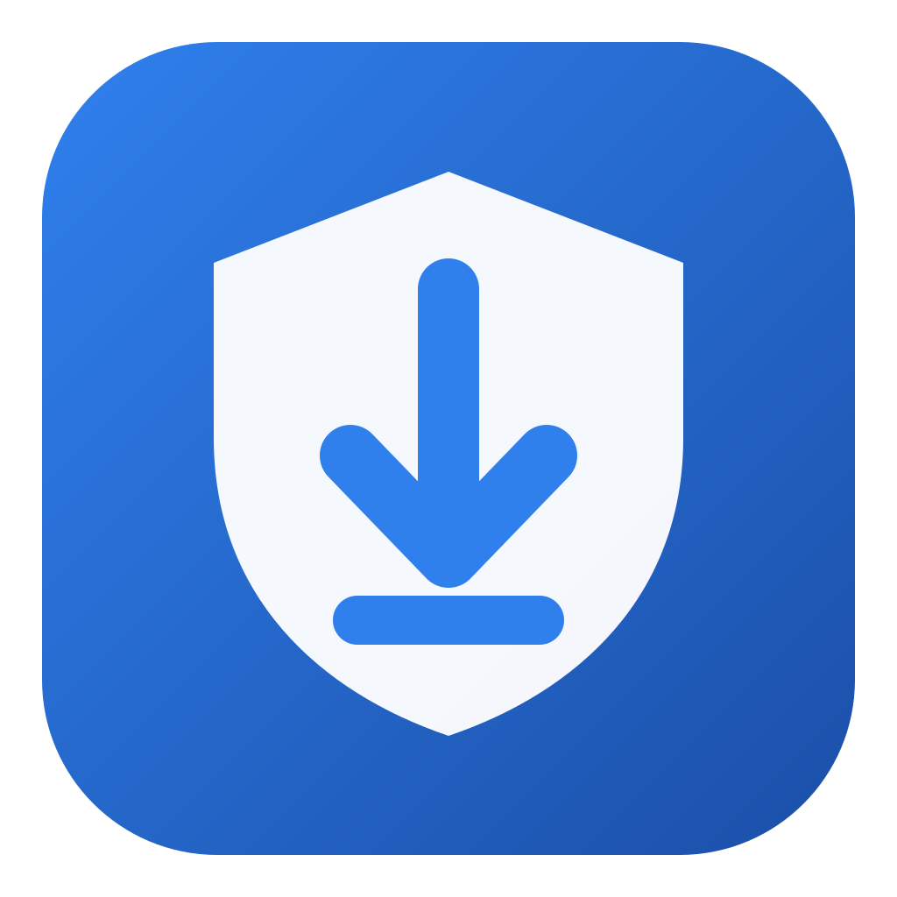

RoboBackup
Backup simples para Windows, sem precisar usar o terminal.
Baixar para WindowsNovidades desta versão · Versões anteriores
Como instalar
- Abra o arquivo baixado e aceite o pedido de administrador.
- Abra o RoboBackup e clique em Preparar o computador.
- Clique em Nova rotina de backup e siga o assistente.
- Clique em Executar agora e confira se aparece em verde.
Requer Windows 10 ou 11 (64 bits).